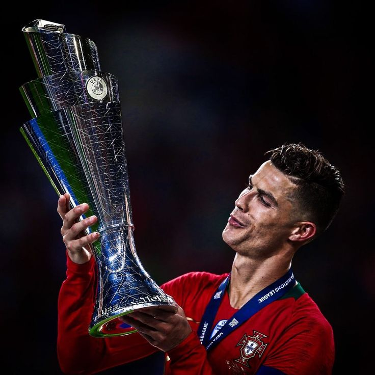

Le Succès de Cristiano Ronaldo : Une Légende du Football Moderne
Cristiano Ronaldo est bien plus qu'un simple footballeur. Il est une légende vivante dont le succès et l'influence s'étendent bien au-delà du terrain. Avec une carrière extraordinaire marquée par des exploits incroyables, des records inégalés et une dévotion sans faille au sport, Ronaldo est devenu une icône mondiale et une source d'inspiration pour des millions de fans à travers le monde.
Débuts précoces
Cristiano Ronaldo a commencé son parcours de football à un jeune âge, montrant un talent immense et une dévotion dès le début. Né à Madère, Portugal, il a surmonté de nombreux défis pour poursuivre sa passion pour le football. La persévérance et le travail acharné de Ronaldo ont posé les bases de son succès remarquable dans les années à venir.
Ascension vers la renommée

Ronaldo travail acharné et des compétences exceptionnelles l'ont propulsé au sommet du monde du football. De ses performances décisives au Sporting Lisbonne à son passage remarquable à Manchester United, il a livré des performances exceptionnelles qui ont captivé les fans du monde entier. Sa capacité à marquer des buts et à mener ses équipes à la victoire lui a valu une reconnaissance généralisée et a cimenté son statut de l'un des plus grands footballeurs de tous les temps.
Exploits et records

Cristiano a brisé de nombreux records tout au long de sa carrière illustre. Devenir le meilleur buteur de tous les temps de l'histoire de la Ligue des champions de l'UEFA à remporter plusieurs titres de Ballon d'Or, ses réalisations sont inégalées. Sa quête incessante d'excellence et sa détermination inébranlable à réussir l'ont propulsé vers de nouveaux sommets, inspirant des générations de footballeurs aspirants du monde entier.
Icone mondiale
Le succès de Ronaldo transcende le terrain de football. Il est une icône mondiale, admirée pour son charisme, sa philanthropie et son dévouement à l'excellence. En dehors du terrain, il s'est imposé comme un entrepreneur réussi, une icône de la mode et un philanthrope. Son impact dépasse largement le domaine du sport, ce qui en fait l'une des figures les plus influentes de sa génération.